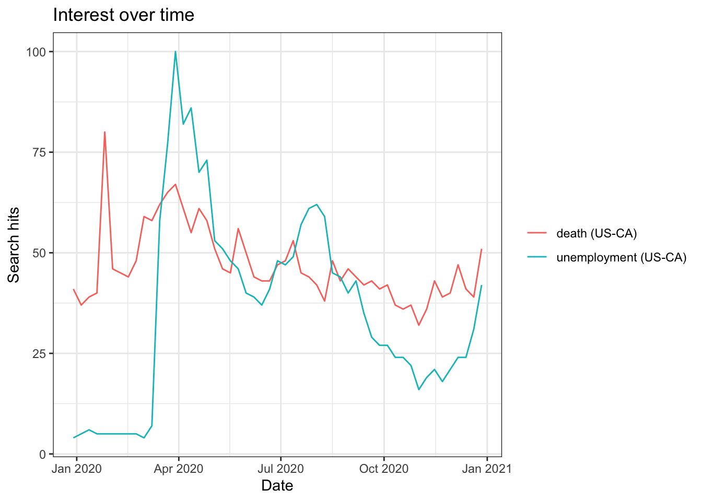

library(tidyverse)
library(gtrendsR)
library(censusapi)
library(dplyr)Assignment 2 by Félix Báez-Santiago and Gloria Zhou
Due at 11:59pm on October 1.
You may work in pairs or individually for this assignment. Make sure you join a group in Canvas if you are working in pairs. Turn in this assignment as an HTML or PDF file to ELMS. Make sure to include the R Markdown or Quarto file that was used to generate it.
In this assignment, you will pull from APIs to get data from various data sources and use your data wrangling skills to use them all together. You should turn in a report in PDF or HTML format that addresses all of the questions in this assignment, and describes the data that you pulled and analyzed. You do not need to include full introduction and conclusion sections like a full report, but you should make sure to answer the questions in paragraph form, and include all relevant tables and graphics.
Whenever possible, use piping and dplyr. Avoid hard-coding any numbers within the report as much as possible.
Pulling from APIs
Our first data source is the Google Trends API. Suppose we are interested in the search trends for crime and loans in Illinois in the year 2020. We could find this using the following code:
res <- gtrends(c("crime", "loans"),
geo = "US-IL",
time = "2020-01-01 2020-12-31",
low_search_volume = TRUE)
plot(res)
interest_over_time <- data.frame(res$interest_over_time)
interest_by_dma <- data.frame(res$interest_by_dma)
interest_by_city <- data.frame(res$interest_by_city)
head(interest_over_time) date hits keyword geo time gprop category
1 2019-12-29 56 crime US-IL 2020-01-01 2020-12-31 web 0
2 2020-01-05 58 crime US-IL 2020-01-01 2020-12-31 web 0
3 2020-01-12 56 crime US-IL 2020-01-01 2020-12-31 web 0
4 2020-01-19 55 crime US-IL 2020-01-01 2020-12-31 web 0
5 2020-01-26 52 crime US-IL 2020-01-01 2020-12-31 web 0
6 2020-02-02 55 crime US-IL 2020-01-01 2020-12-31 web 0head(interest_by_dma) location hits keyword geo gprop
1 Rockford IL 100 crime US-IL web
2 Chicago IL 99 crime US-IL web
3 St. Louis MO 98 crime US-IL web
4 Quincy IL-Hannibal MO-Keokuk IA 90 crime US-IL web
5 Peoria-Bloomington IL 86 crime US-IL web
6 Champaign & Springfield-Decatur IL 84 crime US-IL webhead(interest_by_city) location hits keyword geo gprop
1 Buffalo Grove 100 crime US-IL web
2 Palos Heights 80 crime US-IL web
3 Anna 79 crime US-IL web
4 Pleasant Plains 70 crime US-IL web
5 Lebanon 67 crime US-IL web
6 Macomb 66 crime US-IL webAnswer the following questions for the keywords “crime” and “loans”.
- Find the mean, median and variance of the search hits for the keywords.
interest_over_time %>%
na.omit() %>%
group_by(keyword) %>%
summarise(
search_hits_mean = mean(hits),
search_hits_median = median(hits),
search_hits_variance = var(hits)
)# A tibble: 2 × 4
keyword search_hits_mean search_hits_median search_hits_variance
<chr> <dbl> <int> <dbl>
1 crime 51 50 67.9
2 loans 62.3 60 101. interest_by_dma %>%
na.omit() %>%
group_by(keyword) %>%
summarise(
search_hits_mean = mean(hits),
search_hits_median = median(hits),
search_hits_variance = var(hits)
)# A tibble: 2 × 4
keyword search_hits_mean search_hits_median search_hits_variance
<chr> <dbl> <dbl> <dbl>
1 crime 86.7 85 96.9
2 loans 80.8 79 106. interest_by_city %>%
na.omit() %>%
group_by(keyword) %>%
summarise(
search_hits_mean = mean(hits),
search_hits_median = median(hits),
search_hits_variance = var(hits)
)# A tibble: 2 × 4
keyword search_hits_mean search_hits_median search_hits_variance
<chr> <dbl> <int> <dbl>
1 crime 54.3 51 121.
2 loans 50.5 47 115.Within interest_over_time, the mean of crim is 56.887 and the median is 57, with the variance of 85.295; while the mean of loans is 68.906 and the median is 66, with the variance of 105.241. Within interest_by_dma, the mean of crim is 85.8 and the median is 87.0, with the variance of 75.733; while the mean of loans is 82.3 and the median is 80.5, with the variance of 81.789. Within interest_by_city, the mean of crim is 65.821 and the median is 61, with the variance of 151.625; while the mean of loans is 59.556 and the median is 57, with the variance of 97.454.
Which cities (locations) have the highest search frequency for
loans? Note that there might be multiple rows for each city if there were hits for both “crime” and “loans” in that city. It might be easier to answer this question if we had the search hits info for both search terms in two separate variables. That is, each row would represent a unique city.highest_search_frequency <- interest_by_city %>% # search in city dataset na.omit() %>% # remove null values filter(keyword == "loans") %>% # filter for only rows searches for loans transmute( location, freq = hits / sum(hits) ) %>% # select city and create frequency variable arrange(desc(freq)) %>% # arrange in descending order of search frequency head(15) head(highest_search_frequency, 10)location freq 1 Evergreen Park 0.04833253 2 Long Lake 0.03721605 3 Rosemont 0.02996617 4 Peotone 0.02948284 5 Channel Lake 0.02851619 6 Coal City 0.02754954 7 Dolton 0.02706622 8 East Saint Louis 0.02658289 9 Ford Heights 0.02609957 10 Hazel Crest 0.02609957ggplot(highest_search_frequency, aes(x = reorder(location, -freq), y = freq)) + geom_bar(stat = "identity", fill = "steelblue") + labs(x = "City in Illinois (Location)", y = "Search Frequency for Loan", title = "Which cities have the highest search frequency for loans?") + theme_minimal() + theme(axis.text.x = element_text(angle = 45, hjust = 1))
Long Lake has the highest search frequency for loans
- Is there a relationship between the search intensities between the two keywords we used?
correlation <- cor(interest_over_time$hits[interest_over_time$keyword == "crime"],
interest_over_time$hits[interest_over_time$keyword == "loans"])
round(correlation,3)[1] -0.166There is a very negative weak correlation between the two keywords we used.
Repeat the above for keywords related to covid. Make sure you use multiple keywords like we did above. Try several different combinations and think carefully about words that might make sense within this context.
#Fetch Google Trends data for Covid related keywords
covid_res <- gtrends(c("unemployment", "death"),
geo = "US-CA",
time = "2020-01-01 2020-12-31",
low_search_volume = TRUE)
plot(covid_res)
covid_interest_over_time <- data.frame(covid_res$interest_over_time)
covid_interest_by_dma <- data.frame(covid_res$interest_by_dma)
covid_interest_by_city <- data.frame(covid_res$interest_by_city)
head(covid_interest_over_time) date hits keyword geo time gprop category
1 2019-12-29 4 unemployment US-CA 2020-01-01 2020-12-31 web 0
2 2020-01-05 5 unemployment US-CA 2020-01-01 2020-12-31 web 0
3 2020-01-12 6 unemployment US-CA 2020-01-01 2020-12-31 web 0
4 2020-01-19 5 unemployment US-CA 2020-01-01 2020-12-31 web 0
5 2020-01-26 5 unemployment US-CA 2020-01-01 2020-12-31 web 0
6 2020-02-02 5 unemployment US-CA 2020-01-01 2020-12-31 web 0head(covid_interest_by_dma) location hits keyword geo gprop
1 Medford-Klamath Falls OR 100 unemployment US-CA web
2 Reno NV 82 unemployment US-CA web
3 Yuma AZ-El Centro CA 59 unemployment US-CA web
4 Bakersfield CA 50 unemployment US-CA web
5 Palm Springs CA 50 unemployment US-CA web
6 Chico-Redding CA 48 unemployment US-CA webhead(covid_interest_by_city) location hits keyword geo gprop
1 Bystrom 100 unemployment US-CA web
2 Needles 100 unemployment US-CA web
3 South Oroville 75 unemployment US-CA web
4 Cabazon 75 unemployment US-CA web
5 Rancho Tehama Reserve 75 unemployment US-CA web
6 South Lake Tahoe 71 unemployment US-CA web- Find the the mean of
crimis , median and variance of the search hits for the covid keywords.
# Calculate mean, median, and variance for each keyword
covid_interest_over_time %>%
na.omit() %>%
group_by(keyword) %>%
summarise(
search_hits_mean = mean(hits),
search_hits_median = median(hits),
search_hits_variance = var(hits)
)# A tibble: 2 × 4
keyword search_hits_mean search_hits_median search_hits_variance
<chr> <dbl> <int> <dbl>
1 death 46.9 44 86.4
2 unemployment 36.2 37 580. covid_interest_by_dma %>%
na.omit() %>%
group_by(keyword) %>%
summarise(
search_hits_mean = mean(hits),
search_hits_median = median(hits),
search_hits_variance = var(hits)
)# A tibble: 2 × 4
keyword search_hits_mean search_hits_median search_hits_variance
<chr> <dbl> <dbl> <dbl>
1 death 91.8 92 27.4
2 unemployment 50.2 47.5 375. covid_interest_by_city %>%
na.omit() %>%
group_by(keyword) %>%
summarise(
search_hits_mean = mean(hits),
search_hits_median = median(hits),
search_hits_variance = var(hits)
)# A tibble: 2 × 4
keyword search_hits_mean search_hits_median search_hits_variance
<chr> <dbl> <dbl> <dbl>
1 death 4.60 3 123.
2 unemployment 59.1 55 112.Within covid_interest_over_time, the mean of the search hits for the keyword death is 46.264, and the median is 44, with the variance of 84.544; while the mean of the search hits for the keyword unemployment is 35.717, and the median is 37, with variance of 577.476.Within covid_interest_by_dma, the mean of the search hits for the keyword death is 84.286, and the median is 85, with the variance of 47.604; while the mean of the search hits for the keyword unemployment is 52.071, and the median is 46, with variance of 412.687. Within covid_interest_by_city, the mean of the search hits for the keyword death is 20.116, and the median is 17, with the variance of 158.819; while the mean of the search hits for the keyword unemployment is 74.308, and the median is 70.5, with variance of 87.742.
- Which cities (locations) have the highest search frequency for death? Note that there might be multiple rows for each city if there were hits for both “unemployment” and “death” in that city. It might be easier to answer this question if we had the search hits info for both search terms in two separate variables. That is, each row would represent a unique city.
# Find the city with the highest search frequency for each keyword###
highest_death_frequency <- covid_interest_by_city %>% # search in city dataset
na.omit() %>% # remove null values
filter(keyword == "death") %>% # filter for only rows searches for loans
transmute(
location,
freq = hits / sum(hits)
) %>% # select city and create frequency variable
arrange(desc(freq)) %>% # arrange in descending order of search frequency
head(15)
head(highest_death_frequency, 10) location freq
1 Furnace Creek 0.278551532
2 Lone Pine 0.047353760
3 Olancha 0.030640669
4 Big Pine 0.011142061
5 China Lake Acres 0.011142061
6 Pearblossom 0.011142061
7 Independence 0.011142061
8 Bishop 0.011142061
9 Bridgeport 0.011142061
10 Sonora 0.008356546ggplot(highest_death_frequency,
aes(x = reorder(location, -freq),
y = freq)) +
geom_bar(stat = "identity", fill = "darkgreen") +
labs(x = "City in California (Location)",
y = "Search Frequency for Deaths", title = "Which cities have the highest search frequency for deaths related to Covid?") +
theme_minimal() +
theme(axis.text.x = element_text(angle = 45, hjust = 1))
# If any correlation between search intensities of COVID related keywords
correlation_covid <- cor(covid_interest_over_time$hits[covid_interest_over_time$keyword == "unemployment"],
covid_interest_over_time$hits[covid_interest_over_time$keyword == "death"])
round(correlation_covid, 3)[1] 0.413There is a positive moderate correlation between these two keywords we used.
Google Trends + ACS
Now lets add another data set. The censusapi package provides a nice R interface for communicating with this API. However, before running queries we need an access key. This (easy) process can be completed here:
https://api.census.gov/data/key_signup.html
Once you have an access key, save it as a text file, then read this key in the cs_key object. We will use this object in all following API queries. Note that I called my text file census-key.txt – yours might be different!
{library(censusapi)} cs_key <- read_file("census-key.txt")
In the following, we request basic socio-demographic information (population, median age, median household income, income per capita) for cities and villages in the state of Illinois. Documentation for the 5-year ACS API can be found here: https://www.census.gov/data/developers/data-sets/acs-5year.html. The information about the variables used here can be found here: https://api.census.gov/data/2022/acs/acs5/variables.html.
cs_key <- read_file("census-key.txt")
acs_il <- getCensus(name = "acs/acs5",
vintage = 2020,
vars = c("NAME",
"B01001_001E",
"B06002_001E",
"B19013_001E",
"B19301_001E"),
region = "place:*",
regionin = "state:17",
key = cs_key)
head(acs_il) state place NAME B01001_001E B06002_001E B19013_001E
1 17 15261 Coatsburg village, Illinois 180 35.6 55714
2 17 15300 Cobden village, Illinois 1018 44.2 38750
3 17 15352 Coffeen city, Illinois 640 33.4 35781
4 17 15378 Colchester city, Illinois 1347 42.2 43942
5 17 15469 Coleta village, Illinois 230 27.7 56875
6 17 15495 Colfax village, Illinois 1088 32.5 58889
B19301_001E
1 27821
2 19979
3 26697
4 24095
5 23749
6 24861Convert values that represent missings to NAs.
acs_il[acs_il == -666666666] <- NA
sum(is.na(acs_il))[1] 111Now, it might be useful to rename the socio-demographic variables (B01001_001E etc.) in our data set and assign more meaningful names.
acs_il <-
acs_il %>%
rename(pop = B01001_001E,
age = B06002_001E,
hh_income = B19013_001E,
income = B19301_001E)
names(acs_il)[1] "state" "place" "NAME" "pop" "age" "hh_income"
[7] "income" It seems like we could try to use this location information listed above to merge this data set with the Google Trends data. However, we first have to clean NAME so that it has the same structure as location in the search interest by city data. Add a new variable location to the ACS data that only includes city names.
# Add a new variable `location ` to the ACS data that only includes city names
acs_il$location <- acs_il$NAME
acs_il$location <- sapply(strsplit(as.character(acs_il$location), ","), '[',1)
# Use gsub() to remove suffixes like 'village', 'city', 'town', 'CDP'
acs_il$location <- gsub("\\s+(village|city|town|CDP)$", "", acs_il$location)
# Reorder columns
acs_il <- acs_il %>%
select(state, place, location, pop, age, hh_income, income)
head(acs_il) state place location pop age hh_income income
1 17 15261 Coatsburg 180 35.6 55714 27821
2 17 15300 Cobden 1018 44.2 38750 19979
3 17 15352 Coffeen 640 33.4 35781 26697
4 17 15378 Colchester 1347 42.2 43942 24095
5 17 15469 Coleta 230 27.7 56875 23749
6 17 15495 Colfax 1088 32.5 58889 24861Answer the following questions with the “crime” and “loans” Google trends data and the ACS data.
- First, check how many cities don’t appear in both data sets, i.e. cannot be matched. Then, create a new data set by joining the Google Trends and the ACS data. Keep only cities that appear in both data sets.
# Fetch Google trends data
acs_cities <- unique(acs_il$location)
gtrends_cities <- unique(interest_by_city$location)
unmatched_cities <- setdiff(acs_cities, gtrends_cities)
head(unmatched_cities)[1] "Coatsburg" "Colchester" "Coleta" "Colfax" "Collinsville"
[6] "Colona" num_unmatched <- length(unmatched_cities)
num_unmatched[1] 1114There are num_unmatched cities don’t appear in both data sets.
# Create a new data set by joining the Google Trends and the ACS data
merge_both <- inner_join(acs_il, interest_by_city, by = "location")Warning in inner_join(acs_il, interest_by_city, by = "location"): Detected an unexpected many-to-many relationship between `x` and `y`.
ℹ Row 3 of `x` matches multiple rows in `y`.
ℹ Row 389 of `y` matches multiple rows in `x`.
ℹ If a many-to-many relationship is expected, set `relationship =
"many-to-many"` to silence this warning.head(merge_both) state place location pop age hh_income income hits keyword geo gprop
1 17 15300 Cobden 1018 44.2 38750 19979 NA loans US-IL web
2 17 15352 Coffeen 640 33.4 35781 26697 NA crime US-IL web
3 17 15352 Coffeen 640 33.4 35781 26697 NA loans US-IL web
4 17 15833 Columbia 10692 38.7 107500 50876 NA crime US-IL web
5 17 16613 Coulterville 881 52.5 39688 24132 NA crime US-IL web
6 17 16613 Coulterville 881 52.5 39688 24132 NA loans US-IL webCompute the mean of the search popularity for both keywords for cities that have an above average median household income and for those that have an below average median household income. When building your pipe, start with creating the grouping variable and then proceed with the remaining tasks. What conclusions might you draw from this?
avg_hh_income <- mean(merge_both$hh_income, na.rm = TRUE) income_cat_keyword <- merge_both %>% na.omit() %>% mutate(income_category = ifelse(hh_income > avg_hh_income, "Above Average", "Below Average")) %>% group_by(income_category, keyword) %>% summarize(mean_popularity = mean(hits, na.rm = TRUE))`summarise()` has grouped output by 'income_category'. You can override using the `.groups` argument.income_cat_keyword# A tibble: 4 × 3 # Groups: income_category [2] income_category keyword mean_popularity <chr> <chr> <dbl> 1 Above Average crime 55.3 2 Above Average loans 53.2 3 Below Average crime 53.2 4 Below Average loans 47.8# Create the bar plot ggplot(income_cat_keyword, aes(x = keyword, y = mean_popularity, fill = income_category)) + geom_bar(stat = "identity", position = "dodge") + labs(title = "Mean Search Popularity by Income Category and Keyword", x = "Keyword", y = "Mean Search Popularity", fill = "Income Category") + theme_minimal()
From the data, we observe that the search popularity for both keywords, “crime” and “loans,” is slightly higher in cities with above-average household incomes compared to those with below-average incomes. Specifically, searches for “crime” are more frequent in higher-income cities (mean = 61.55) than in lower-income cities (mean = 59.29). Similarly, searches for “loans” are also more popular in above-average income cities (mean = 53.21) compared to below-average income cities (mean = 47.76).
- Is there a relationship between the median household income and the search popularity of the Google trends terms? Describe the relationship and use a scatterplot with
qplot().
merge_tmp <- merge_both %>%
na.omit() %>%
select(
location, hh_income, hits
)
qplot(hh_income, hits,data =merge_tmp) +
labs(title = "Relationship between Median Household Income and Search Popularity",
x = "Median Household Income",
y = "Search Popularity")Warning: `qplot()` was deprecated in ggplot2 3.4.0.The scatterplot shows a weak relationship between median household income and the search popularity of the terms. Since the points are very dispered, we see that search popularity is pretty consistent across income levels. While some higher popularity values occur in lower-income houses, there is no clear pattern linking income to search interest. We can infer that the selected search terms may appeal to a wide range of income levels.
Repeat the above steps using the covid data and the ACS data.
- First, check how many cities don’t appear in both data sets, i.e. cannot be matched. Then, create a new data set by joining the Google Trends and the ACS data. Keep only cities that appear in both data sets.
acs_cities <- unique(acs_il$location)
covid_gtrends_cities <- unique(covid_interest_by_city$location)
covid_unmatched_cities <- setdiff(acs_cities, covid_gtrends_cities)
head(covid_unmatched_cities)[1] "Coatsburg" "Cobden" "Coffeen" "Colchester" "Coleta"
[6] "Collinsville"covid_num_unmatched <- length(covid_unmatched_cities)
covid_num_unmatched[1] 1430# Create a new data set by joining the Google Trends and the ACS data
# Keep
covid_merge_both <- inner_join(acs_il, covid_interest_by_city, by = "location")
head(covid_merge_both) state place location pop age hh_income income hits keyword geo
1 17 15495 Colfax 1088 32.5 58889 24861 3 death US-CA
2 17 15833 Columbia 10692 38.7 107500 50876 NA unemployment US-CA
3 17 16613 Coulterville 881 52.5 39688 24132 NA unemployment US-CA
4 17 16613 Coulterville 881 52.5 39688 24132 NA death US-CA
5 17 17406 Crescent City 485 43.1 57500 31276 NA unemployment US-CA
6 17 18225 Cutler 429 39.1 44531 20896 NA unemployment US-CA
gprop
1 web
2 web
3 web
4 web
5 web
6 webWe see that there are 1433 unmatched cities in the covid dataset from the acs dataset.
- Compute the mean of the search popularity for both keywords for cities that have an above average median household income and for those that have an below average median household income. When building your pipe, start with creating the grouping variable and then proceed with the remaining tasks. What conclusions might you draw from this?
covid_avg_hh_income <- mean(covid_merge_both$hh_income, na.rm = TRUE)
covid_income_cat_keyword <- covid_merge_both %>%
na.omit() %>%
mutate(income_category = ifelse(hh_income > covid_avg_hh_income, "Above Average", "Below Average")) %>%
group_by(income_category, keyword) %>%
summarize(mean_popularity = mean(hits, na.rm = TRUE))`summarise()` has grouped output by 'income_category'. You can override using
the `.groups` argument. covid_income_cat_keyword# A tibble: 4 × 3
# Groups: income_category [2]
income_category keyword mean_popularity
<chr> <chr> <dbl>
1 Above Average death 3.5
2 Above Average unemployment 53
3 Below Average death 3
4 Below Average unemployment 58.5 # Create the bar plot
ggplot(covid_income_cat_keyword, aes(x = keyword, y = mean_popularity, fill = income_category)) +
geom_bar(stat = "identity", position = "dodge") +
labs(title = "Mean Search Popularity by Income Category and Keyword",
x = "Keyword",
y = "Mean Search Popularity",
fill = "Income Category") +
theme_minimal()There were very few non-NA values for the keywords we chose, so the dataset may not be super informative. From the data, we observe that the search popularity for the keyword “unemployment” is higher in cities with below-average household incomes compared to those with above-average incomes. Specifically, searches for “unemployment” are more common in lower-income cities (mean = 57.5) than in higher-income cities (mean = 51.0). The search popularity for the keyword “death” remains the same across both income categories, with a mean of 3.0. This may indicate that while concerns about unemployment are more pronounced in lower-income areas, the interest in death is consistent regardless of income, suggesting that this issue may be relevant everywhere during the COVID-19 Pandemic.
- Is there a relationship between the median household income and the search popularity of the Google trends terms? Describe the relationship and use a scatterplot with
qplot().
covid_merge_tmp <- covid_merge_both %>%
na.omit() %>%
select(
location, hh_income, hits
)
qplot(hh_income, hits,data = covid_merge_tmp) +
labs(title = "Relationship between Median Household Income and Search Popularity",
x = "Median Household Income",
y = "Search Popularity")There were very few non-NA values for the keywords we chose the scatterplot is not very informative. We can see that the datapoints are very spread out, but overall we see that search popularity suddenly increases for some middle income households, but there is very little that we can conclude from this graph.